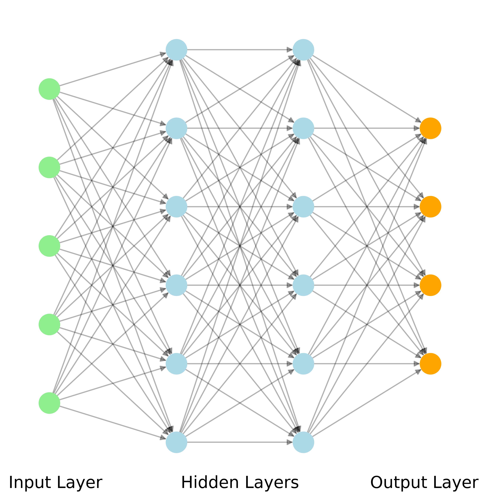

\(\newcommand{\bmu}{\boldsymbol{\mu}}\) \(\newcommand{\bSigma}{\boldsymbol{\Sigma}}\) \(\newcommand{\bfbeta}{\boldsymbol{\beta}}\) \(\newcommand{\bflambda}{\boldsymbol{\lambda}}\) \(\newcommand{\bgamma}{\boldsymbol{\gamma}}\) \(\newcommand{\bsigma}{{\boldsymbol{\sigma}}}\) \(\newcommand{\bpi}{\boldsymbol{\pi}}\) \(\newcommand{\btheta}{{\boldsymbol{\theta}}}\) \(\newcommand{\bphi}{\boldsymbol{\phi}}\) \(\newcommand{\balpha}{\boldsymbol{\alpha}}\) \(\newcommand{\blambda}{\boldsymbol{\lambda}}\) \(\renewcommand{\P}{\mathbb{P}}\) \(\newcommand{\E}{\mathbb{E}}\) \(\newcommand{\indep}{\perp\!\!\!\perp} \newcommand{\bx}{\mathbf{x}}\) \(\newcommand{\bp}{\mathbf{p}}\) \(\renewcommand{\bx}{\mathbf{x}}\) \(\newcommand{\bX}{\mathbf{X}}\) \(\newcommand{\by}{\mathbf{y}}\) \(\newcommand{\bY}{\mathbf{Y}}\) \(\newcommand{\bz}{\mathbf{z}}\) \(\newcommand{\bZ}{\mathbf{Z}}\) \(\newcommand{\bw}{\mathbf{w}}\) \(\newcommand{\bW}{\mathbf{W}}\) \(\newcommand{\bv}{\mathbf{v}}\) \(\newcommand{\bV}{\mathbf{V}}\) \(\newcommand{\bfg}{\mathbf{g}}\) \(\newcommand{\bfh}{\mathbf{h}}\) \(\newcommand{\horz}{\rule[.5ex]{2.5ex}{0.5pt}}\) \(\renewcommand{\S}{\mathcal{S}}\) \(\newcommand{\X}{\mathcal{X}}\) \(\newcommand{\var}{\mathrm{Var}}\) \(\newcommand{\pa}{\mathrm{pa}}\) \(\newcommand{\Z}{\mathcal{Z}}\) \(\newcommand{\bh}{\mathbf{h}}\) \(\newcommand{\bb}{\mathbf{b}}\) \(\newcommand{\bc}{\mathbf{c}}\) \(\newcommand{\cE}{\mathcal{E}}\) \(\newcommand{\cP}{\mathcal{P}}\) \(\newcommand{\bbeta}{\boldsymbol{\beta}}\) \(\newcommand{\bLambda}{\boldsymbol{\Lambda}}\) \(\newcommand{\cov}{\mathrm{Cov}}\) \(\newcommand{\bfk}{\mathbf{k}}\) \(\newcommand{\idx}[1]{}\) \(\newcommand{\xdi}{}\)
8.5. Building blocks of AI 3: neural networks#
In this section, we introduce neural networks. Unlike the previous examples we encountered, this one is not convex. Based on the theory we developed in this chapter, finding a local minimizer is the best we can hope for in general from descent methods. Yet, in many application settings, stochastic gradient descent (and some variants) have proven very effective at computing a good model to fit the data. Why that is remains an open question.
We describe the basic setup and apply it to classification on the MNIST dataset. As we will see, we will get a significant improvement over multinomial logistic regression. We use a particular architecture referred as a multilayer perceptron (MLP)\(\idx{multilayer perceptron}\xdi\). These are a special class of progressive functions.
8.5.1. Multilayer perceptron#
Each of the main layers of a feedforward neural network\(\idx{neural network}\xdi\) has two components, an affine map and a nonlinear activation function\(\idx{activation function}\xdi\). For the latter, we restrict ourselves here to the sigmoid function\(\idx{sigmoid}\xdi\) (although there are many other choices of activation functions).
The Jacobian of the elementwise version of the sigmoid function (which we will need later on)
as a function of several variables can be computed from \(\sigma'\), i.e., the derivative of the single-variable case. Indeed, we have seen in a previous example that \(J_{\bsigma}(\mathbf{t})\) is the diagonal matrix with diagonal entries
which we denote
where \(\bsigma'(\mathbf{t}) = (\sigma'(t_1), \ldots,\sigma'(t_{n}))\) and \(\mathbf{1}\) is the all-one vector.
We consider an arbitrary number of layers\(\idx{layer}\xdi\) \(L+2\). As a special case of progressive functions\(\idx{progressive function}\xdi\), hidden layer\(\idx{hidden layer}\xdi\) \(i\), \(i=1,\ldots,L\), is defined by a continuously differentiable function \(\mathbf{z}_i := \bfg_{i-1}(\mathbf{z}_{i-1}, \mathbf{w}_{i-1})\) which takes two vector-valued inputs: a vector \(\mathbf{z}_{i-1} \in \mathbb{R}^{n_{i-1}}\) fed from the \((i-1)\)-st layer and a vector \(\mathbf{w}_{i-1} \in \mathbb{R}^{r_{i-1}}\) of parameters specific to the \(i\)-th layer
The output \(\mathbf{z}_i\) of \(\bfg_{i-1}\) is a vector in \(\mathbb{R}^{n_{i}}\) which is passed to the \((i+1)\)-st layer as input. Each component of \(\bfg_{i-1}\) is referred to as a neuron. Here \(r_{i-1} = n_{i} n_{i-1}\) and \(\mathbf{w}_{i-1} = (\mathbf{w}^{(1)}_{i-1},\ldots,\mathbf{w}^{(n_{i})}_{i-1})\) are the parameters with \(\mathbf{w}^{(k)}_{i-1} \in \mathbb{R}^{n_{i-1}}\) for all \(k\). Specifically, \(\bfg_{i-1}\) is given by
where we define \(\mathcal{W}_{i-1} \in \mathbb{R}^{n_{i} \times n_{i-1}}\) as the matrix with rows \((\mathbf{w}_{i-1}^{(1)})^T,\ldots,(\mathbf{w}_{i-1}^{(n_{i})})^T\). As we have done previously, to keep the notation simple, we ignore the constant term (or “bias variable”\(\idx{bias variable}\xdi\)) in the linear combinations of \(\mathbf{z}_{i-1}\). It can be incorporated by adding a \(1\) input to each neuron as illustrated below. We will not detail this complication here.
Figure: Each component of \(g_i\) is referred to as a neuron (Source)
{kind=link}

\(\bowtie\)
The input layer\(\idx{input layer}\xdi\) is \(\mathbf{z}_0 := \mathbf{x}\), which we refer to as layer \(0\), so that \(n_0 = d\).
Similarly to multinomial logistic regression, layer \(L+1\) (i.e., the output layer\(\idx{output layer}\xdi\)) is the softmax function
but this time we compose it with a linear transformation. We implicitly assume that \(\bgamma\) has \(K\) outputs and, in particular, we have that \(n_{L+1} = K\).
So the output of the classifier with parameters \(\mathbf{w} =(\mathbf{w}_0,\ldots,\mathbf{w}_{L})\) on input \(\mathbf{x}\) is
What makes this an MLP is that, on each layer, all outputs feed into the input of the next layer. In graphical terms, the edges between consecutive layers form a complete bipartite graph.

We again use cross-entropy\(\idx{cross-entropy}\xdi\) as the loss function (although there are many other choices of loss functions). That is, we set
Finally,
8.5.2. A first example#
Before detailing a general algorithm for computing the gradient, we adapt our first progressive example to this setting to illustrate the main ideas. Suppose \(d=3\), \(L=1\), \(n_1 = n_2 = 2\), and \(K = 2\), that is, we have one hidden layer and our output is 2-dimensional. Fix a data sample \(\mathbf{x} = (x_1,x_2,x_3) \in \mathbb{R}^3, \mathbf{y} = (y_1, y_2) \in \mathbb{R}^2\). For \(i=0, 1\), we use the notation
and let
The layer functions are as follows
We seek to compute the gradient of
where
In the forward phase, we compute \(f\) itself and the requisite Jacobians:
where we used the Chain Rule to compute the Jacobian of \(J_{\bfg_0}\).
Then
where \(Z\) was introduced previously and we used the expression for \(J_{\bgamma}\) from the previous subsection.
Finally
We first compute the partial derivatives with respect to \(\mathbf{w}_1 = (w_6, w_7, w_8, w_9)\). For this step, we think of \(f\) as the composition of \(\ell(\mathbf{z}_2)\) as a function of \(\mathbf{z}_2\) and \(\bfg_1(\mathbf{z}_1, \mathbf{w}_1) = \bgamma(\mathcal{W}_1 \mathbf{z}_1)\) as a function of \(\mathbf{w}_1\). Here \(\mathbf{z}_1\) does not depend on \(\mathbf{w}_1\) and therefore can be considered fixed for this calculation. By the Chain Rule and the Properties of the Kronecker Product (f), we get
where we used the Properties of the Hadamard Product and the fact that \(\hat{\mathbf{y}} = \bgamma(\mathcal{W}_{1} \mathbf{z}_{1})\) similarly to a calculation we did in the multinomial logistic regression setting.
To compute the partial derivatives with respect to \(\mathbf{w}_0 = (w_0, w_1, \ldots, w_5)\), we first need to compute partial derivatives with respect to \(\mathbf{z}_1 = (z_{1,1}, z_{1,2})\) since \(f\) depends on \(\mathbf{w}_0\) through it. For this calculation, we think again of \(f\) as the composition \(\ell(\bfg_1(\mathbf{z}_1, \mathbf{w}_1))\), but this time our focus is on the variables \(\mathbf{z}_1\). This is almost identical to the previous calculation, except that we use the block of \(J_{\bfg_1}(\mathbf{z}_1, \mathbf{w}_1)\) corresponding to the partial derivatives with respect to \(\mathbf{z}_1\) (i.e., the “\(A\)” block). We obtain
The vector \(\left(\frac{\partial f(\mathbf{w})}{\partial z_{1,1}}, \frac{\partial f(\mathbf{w})}{\partial z_{1,2}}\right)\) is called an adjoint.
We now compute the gradient of \(\mathbf{f}\) with respect to \(\mathbf{w}_0 = (w_0, w_1, \ldots, w_5)\). For this step, we think of \(f\) as the composition of \(\ell(\bfg_1(\mathbf{z}_1, \mathbf{w}_1))\) as a function of \(\mathbf{z}_1\) and \(\bfg_0(\mathbf{z}_0, \mathbf{w}_0)\) as a function of \(\mathbf{w}_0\). Here \(\mathbf{w}_1\) and \(\mathbf{z}_0\) do not depend on \(\mathbf{w}_0\) and therefore can be considered fixed for this calculation. By the Chain Rule
where we used Properties of the Kronecker Product (f) on the second to last line and our expression for the derivative of the sigmoid function on the last line.
To sum up,
NUMERICAL CORNER: We return to the concrete example from the previous section. We re-write the gradient as
We will use torch.nn.functional.sigmoid and
torch.nn.functional.softmax for the sigmoid and softmax functions respectively. We also use torch.dot for the inner product (i.e., dot product) of two vectors (as tensors) and torch.diag for the creation of a diagonal matrix with specified entries on its diagonal.
import torch.nn.functional as F
x = torch.tensor([1.,0.,-1.])
y = torch.tensor([0.,1.])
W0 = torch.tensor([[0.,1.,-1.],[2.,0.,1.]], requires_grad=True)
W1 = torch.tensor([[-1.,0.],[2.,-1.]], requires_grad=True)
z0 = x
z1 = F.sigmoid(W0 @ z0)
z2 = F.softmax(W1 @ z1, dim=0)
f = -torch.dot(torch.log(z2), y)
print(z0)
tensor([ 1., 0., -1.])
print(z1)
tensor([0.7311, 0.7311], grad_fn=<SigmoidBackward0>)
print(z2)
tensor([0.1881, 0.8119], grad_fn=<SoftmaxBackward0>)
Show code cell source
print(f)
tensor(0.2084, grad_fn=<NegBackward0>)
We compute the gradient \(\nabla f(\mathbf{w})\) using AD.
f.backward()
print(W0.grad)
tensor([[-0.1110, -0.0000, 0.1110],
[ 0.0370, 0.0000, -0.0370]])
Show code cell source
print(W1.grad)
tensor([[ 0.1375, 0.1375],
[-0.1375, -0.1375]])
We use our formulas to confirm that they match these results.
with torch.no_grad():
grad_W0 = torch.kron((z2 - y).unsqueeze(0) @ W1 @ torch.diag(z1 * (1-z1)), z0.unsqueeze(0))
grad_W1 = torch.kron((z2 - y).unsqueeze(0), z1.unsqueeze(0))
print(grad_W0)
tensor([[-0.1110, -0.0000, 0.1110, 0.0370, 0.0000, -0.0370]])
Show code cell source
print(grad_W1)
tensor([[ 0.1375, 0.1375, -0.1375, -0.1375]])
The results match with the AD output.
\(\unlhd\)
8.5.3. Computing the gradient#
We now detail how to compute the gradient of \(f(\mathbf{w})\) for a general MLP. In the forward loop, we first set \(\mathbf{z}_0 := \mathbf{x}\) and then we compute for \(i = 0,1,\ldots,L-1\)
To compute the Jacobian of \(\bfg_i\), we use the Chain Rule on the composition \(\bfg_i(\mathbf{z}_i,\mathbf{w}_i) = \bsigma(\bfk_i(\mathbf{z}_i,\mathbf{w}_i))\) where we define \(\bfk_i(\mathbf{z}_i,\mathbf{w}_i) = \mathcal{W}_i \mathbf{z}_i\). That is,
In our analysis of multinomial logistic regression, we computed the Jacobian of \(\bfk_i\). We obtained
Recall that
and
where here \(\mathbf{e}_{j}\) is the \(j\)-th standard basis vector in \(\mathbb{R}^{n_{i+1}}\).
From a previous example, the Jacobian of
is
Combining the previous formulas, we get
where we define
and
where we used the Properties of the Kronecker Product (f).
For layer \(L+1\) (i.e., the output layer), we have previously computed the Jacobian of the softmax function composed with a linear transformation. We get
Also, as in the multinomial logistic regression case, the loss and gradient of the loss are
Initialization: \(\mathbf{z}_0 := \mathbf{x}\)
Forward loop: For \(i = 0,1,\ldots,L-1\):
and
Loss:
Backward loop:
and for \(i = L-1,L-2,\ldots,1,0\):
Output:
NUMERICAL CORNER: We implement the training of a neural network in PyTorch. We use the Fashion MNIST dataset again. We first load it again. We also check for the availability of GPUs.
device = torch.device('cuda' if torch.cuda.is_available()
else ('mps' if torch.backends.mps.is_available()
else 'cpu'))
print('Using device:', device)
Using device: mps
from torchvision import datasets, transforms
from torch.utils.data import DataLoader
import torch.nn as nn
import torch.optim as optim
seed = 42
torch.manual_seed(seed)
if device.type == 'cuda': # device-specific seeding and settings
torch.cuda.manual_seed(seed)
torch.cuda.manual_seed_all(seed) # for multi-GPU
torch.backends.cudnn.deterministic = True
torch.backends.cudnn.benchmark = False
elif device.type == 'mps':
torch.mps.manual_seed(seed) # MPS-specific seeding
g = torch.Generator()
g.manual_seed(seed)
train_dataset = datasets.FashionMNIST(root='./data', train=True,
download=True, transform=transforms.ToTensor())
test_dataset = datasets.FashionMNIST(root='./data', train=False,
download=True, transform=transforms.ToTensor())
BATCH_SIZE = 32
train_loader = DataLoader(train_dataset, batch_size=BATCH_SIZE, shuffle=True, generator=g)
test_loader = DataLoader(test_dataset, batch_size=BATCH_SIZE, shuffle=False)
We construct a two-layer model.
model = nn.Sequential(
nn.Flatten(), # Flatten the input
nn.Linear(28 * 28, 32), # First Linear layer with 32 nodes
nn.Sigmoid(), # Sigmoid activation function
nn.Linear(32, 10) # Second Linear layer with 10 nodes (output layer)
).to(device)
As we did for multinomial logistic regression, we use the Adam optimizer and the cross-entropy loss (which in PyTorch includes the softmax function and expects labels to be class names rather than one-hot encoding).
loss_fn = nn.CrossEntropyLoss()
optimizer = optim.SGD(model.parameters(), lr=1e-3)
We train for 10 epochs.
mmids.training_loop(train_loader, model, loss_fn, optimizer, device, epochs=10)
On the test data, we get:
mmids.test(test_loader, model, loss_fn, device)
Test error: 64.0% accuracy
Disappointingly, this is significantly less accurate model than what we obtained using multinomial logistic regression. It turns out that using a different optimizer gives much better results.
loss_fn = nn.CrossEntropyLoss()
optimizer = optim.Adam(model.parameters())
mmids.training_loop(train_loader, model, loss_fn, optimizer, device)
Epoch 1/3
Epoch 2/3
Epoch 3/3
mmids.test(test_loader, model, loss_fn, device)
Test error: 85.0% accuracy
CHAT & LEARN The text mentions that there are many optimizers available in PyTorch besides SGD. Ask your favorite AI chatbot to explain and implement a different optimizer, such as Adam, Adagrad or RMSprop, for the linear regression problem. Compare the results with those obtained using SGD. \(\ddagger\)
\(\unlhd\)
CHAT & LEARN Regularization techniques are often used to prevent overfitting in neural networks. Ask your favorite AI chatbot about \(L_1\) and \(L_2\) regularization, dropout, and early stopping. Discuss how these techniques can be incorporated into the training process and their effects on the learned model. \(\ddagger\)
Self-assessment quiz (with help from Claude, Gemini, and ChatGPT)
1 What is the role of the sigmoid function in a multilayer perceptron (MLP)?
a) It is used as the loss function for training the MLP.
b) It is used as the nonlinear activation function in each layer of the MLP.
c) It is used to compute the gradient of the loss function with respect to the weights.
d) It is used to initialize the weights of the MLP.
2 In an MLP, what is the purpose of the softmax function in the output layer?
a) To introduce nonlinearity into the model.
b) To normalize the outputs into a probability distribution.
c) To compute the gradient of the loss function.
d) To reduce the dimensionality of the output.
3 What is the Jacobian matrix of the elementwise sigmoid function \(\sigma(t) = (\sigma(t_1), \dots, \sigma(t_n))\)?
a) \(J_\sigma(t) = \mathrm{diag}(\sigma(t))\)
b) \(J_\sigma(t) = \sigma(t) \odot (1-\sigma(t))\)
c) \(J_\sigma(t) = \mathrm{diag}(\sigma(t) \odot (1 - \sigma(t)))\)
d) \(J_\sigma(t) = \sigma(t)(1 - \sigma(t))^T\)
4 In the forward phase of computing the gradient of the loss function in an MLP, what is the output of the \(i\)-th hidden layer?
a) \(z_{i+1} := g_i(z_i, w_i) = \sigma(W_i z_i)\)
b) \(z_{i+1} := g_i(z_i, w_i) = W_i z_i\)
c) \(z_{i+1} := g_i(z_i, w_i) = \gamma(W_i z_i)\)
d) \(z_{i+1} := g_i(z_i, w_i) = W_i \sigma(z_i)\)
5 What is the output of the backward loop in computing the gradient of the loss function in an MLP?
a) The gradient of the loss function with respect to the activations of each layer.
b) The gradient of the loss function with respect to the weights of each layer.
c) The updated weights of the MLP.
d) The loss function value.
Answer for 1: b. Justification: The text states that “Each of the main layers of a feedforward neural network has two components, an affine map and a nonlinear activation function. For the latter, we restrict ourselves here to the sigmoid function.”
Answer for 2: b. Justification: The text states that the softmax function is used in the output layer to produce a probability distribution over the possible classes.
Answer for 3: c. Justification: The text states that the Jacobian of the elementwise sigmoid function is:
where \(\odot\) denotes the Hadamard (elementwise) product.
Answer for 4: a. Justification: The text defines the output of the \(i\)-th hidden layer as:
where \(\sigma\) is the sigmoid activation function and \(W_i\) is the weight matrix for the \(i\)-th layer.
Answer for 5: b. Justification: The text states that the output of the backward loop is the gradient of the loss function with respect to the weights of each layer:
where \(q_i := B_i^T p_{i+1} = \tilde{B}_{n_{i+1}}[z_i, w_i]^T p_{i+1}\) is the gradient with respect to the weights of the \(i\)-th layer.